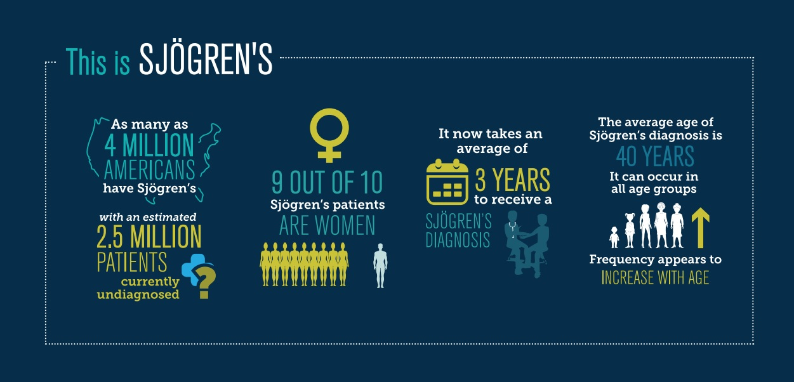
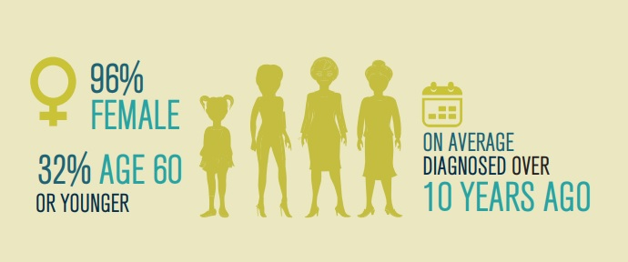
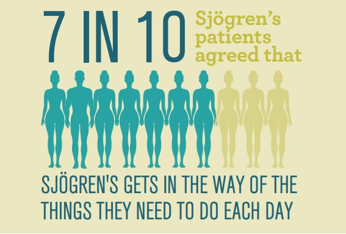
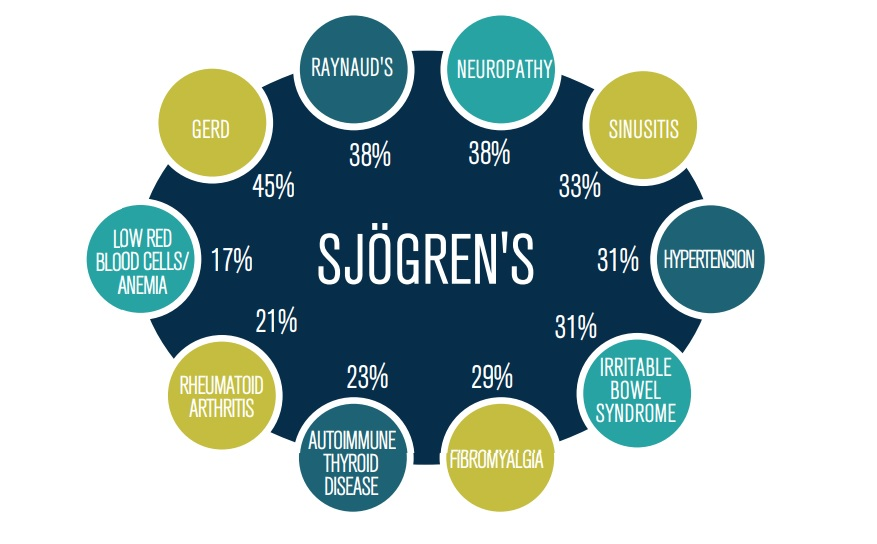

Sjögren's Syndrome Facts

Demographics
- The vast majority (96%) of Sjögren’s patients who completed the Sjögren's Syndrome survey were female. About one-third (32%) of respondents were 60 years of age or younger. On average, respondents said they were diagnosed with Sjögren’s over a decade ago (12.3 years mean).

Sjögren's and Daily Activities
- Over 7 in 10 Sjögren’s patients (71%) agreed that their Sjögren’s gets in the way of the things they need to do each day. Most commonly, nearly half (49%) of patients reported Sjögren’s having a great deal or a lot of negative impact on participating in hobbies, social activities, and extracurricular activities. Around a third say it negatively impacts making diet adjustments (35%), performing activities of daily life (34%), traveling or taking a vacation (34%), and overall mood (33%).
- Nearly 7 in 10 people living with Sjögren’s (67%) agreed that they struggle to cope with their Sjögren’s. Even more agreed that living with Sjögren’s makes every day a challenge (86%).

Change at Home due to Sjögren's
- The majority (79%) of Sjögren’s patients surveyed say their disease has led them to make at least one day-to-day change around the house, such as stopping or cutting back on housework (74%) or hiring additional service providers to help with housecleaning or child care (38%).
Sjögren's and Work Life
- More than half (54%) of Sjögren’s patients surveyed say they have made at least one change regarding work, including having to stop working (28%), reduce their schedule of hours (28%), and make a career change or take a less demanding job (27%) due to their Sjögren’s.
Sjögren's Impact on Speech and Cognition
- More than two in five (44%) patients said that Sjögren’s has had a great deal or a lot of negative impact on finding the correct word during conversation. Slightly fewer said Sjögren’s has had a great deal or a lot of negative impact on concentrating on more than one task at a time (38%) or remembering details at home or work (32%). Brain fog (55%) and forgetfulness (49%) were among symptoms that patients said have had a moderate to major impact on their lives in the last year.
Other Diagnosed Health Conditions for Sjögren’s Patients
- There are many known comorbidities or manifestations of Sjögren’s that can occur in conjunction with the disease. Survey respondents reported having been diagnosed by a health care provider with an average of five other health conditions, including Gastroesophageal Reflux Disease (GERD) (45%), Raynaud’s (38%), Neuropathy (38%), Sinusitis (33%), Hypertension (31%), and Irritable Bowel Syndrome (31%).

Emotional Burden of Sjögren's
- Three-in-four patients (74%) said living with Sjögren’s adds a significant emotional burden to their life, having at least some negative impact on relationships with friends and family (63%), sex life (59%), relationships with spouse/partner (55%), and caring for their children (19%). Sjögren’s patients 60 years of age and under were more likely than those over 60 to say living with Sjögren’s adds a significant emotional burden to their life (80% vs. 71%). Sjögren’s patients diagnosed with the disease 0-4 years ago were more likely than those diagnosed with Sjögren’s 5-9 years ago to say their overall mood has been negatively affected by Sjögren’s a lot or a great deal (42% vs. 36%).
Financial Impacts of Sjögren’s
- Two in three (66%) Sjögren’s patients said living with Sjögren’s adds a significant financial burden to their life. Sjögren’s patients 60 years of age and under reported spending more money, on average, on treatments and were more likely than those over 60 to say living with Sjögren’s adds a significant financial burden to their life (72% vs. 63%). When asked how much money they spent on different types of medical expenses in the past 12 months, patients said they spent the most, on average, on dental care followed by prescription medications, and healthcare appointments/co-payments.